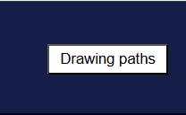

In the deep sea, schools of fish begin a migration of hundreds of kilometres in search of new breeding grounds. You have sixty seconds to guide them through the deep sea, avoiding jellyfish and predators, while collecting yellow fruits to expand the size of the school and ultimately reach the green destination.
Level 3: Deep Sea Exploration (Migration)
Round introduce：
Interaction method：

- You can change the way you control the fish by clicking the ‘Draw Route’ button.
- When not clicking to draw lines, you can click the mouse to attract fish to gather, thereby guiding the fish to move.
- Click the Draw Route button to draw a line to guide the fish school. The fish school will follow your route.

Avoid obstacles：
- Jellyfish
- Hunter
- Be careful of deep-sea earthquakes.（This will cause the fish to scatter.）

Collect items：
- yellow fruit（Every time the school of fish collects a yellow fruit, another fish joins the school.）

Conditions for success：
- At least 60% of the fish safely reach the green circle finish line.
- Survival rate below 60% or migration timeout.
downloading...